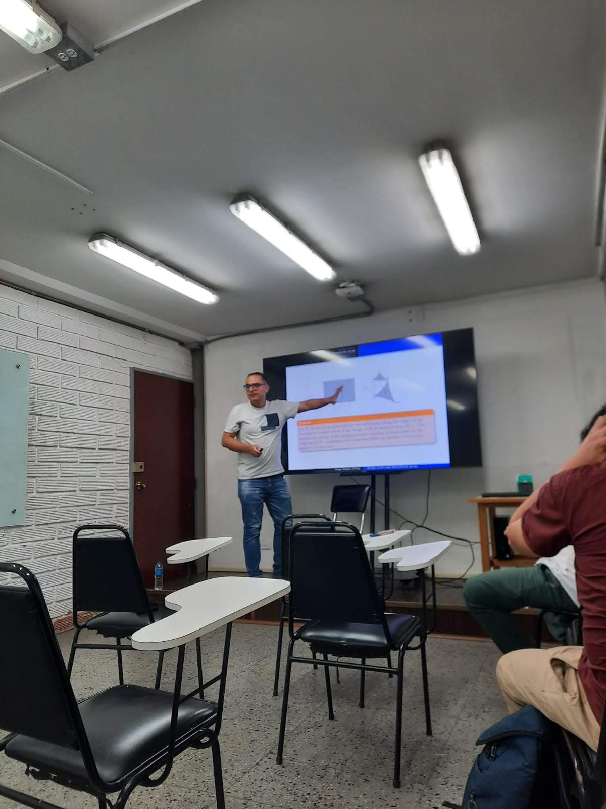
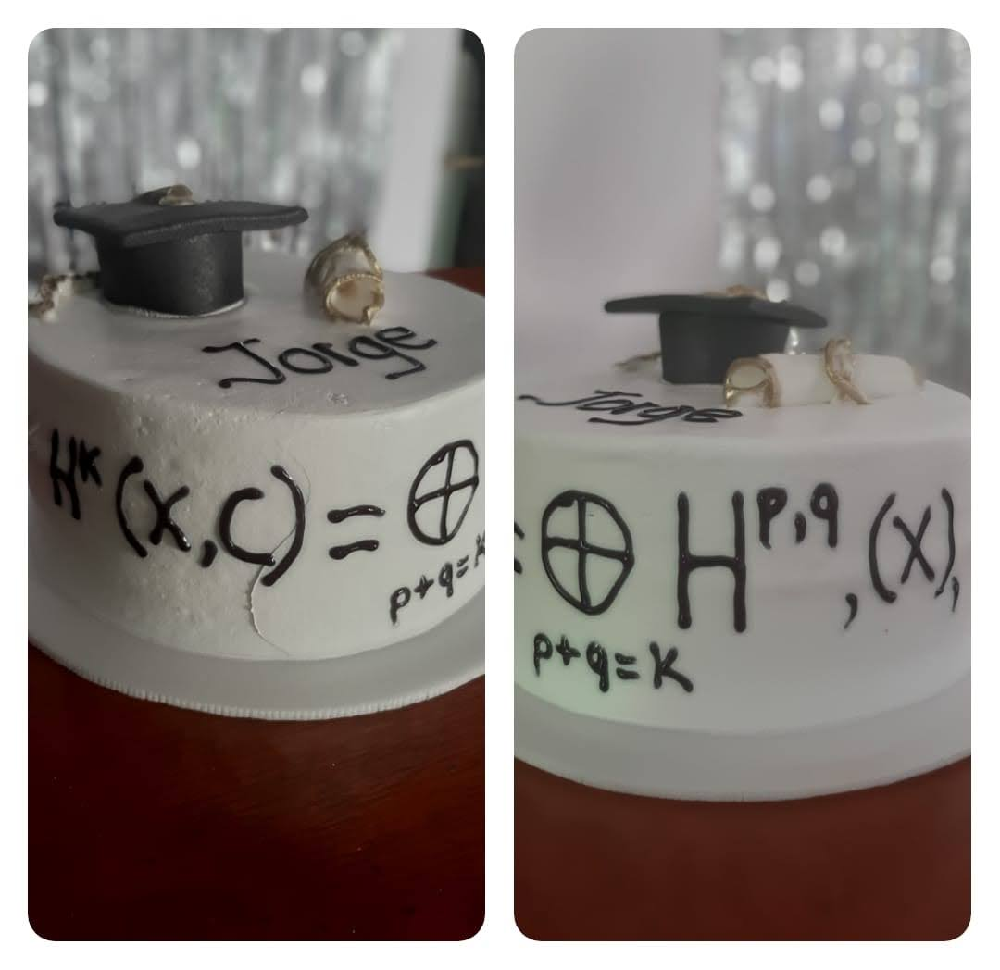
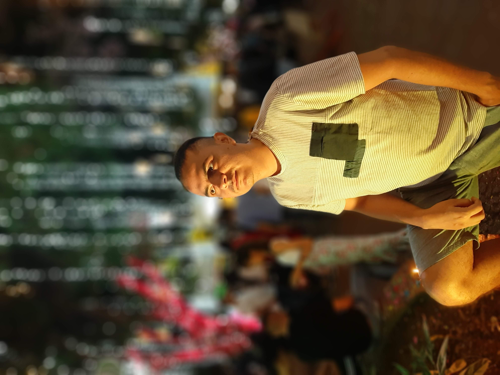
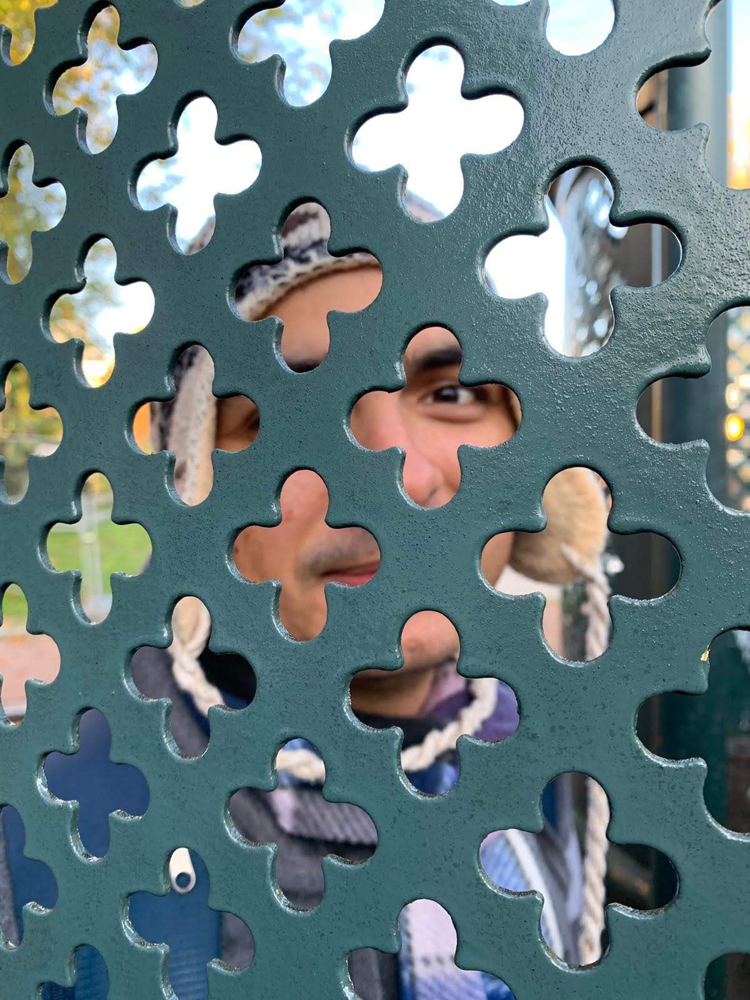

Jorge Duque Franco
Postdoctoral Fellow at Instituto de Matemáticas, Universidad de Talca.
About
01Since August 2025, I have been a Postdoctoral Fellow at INST-MAT, Universidad de Talca, under the supervision of Prof. Alvaro Liendo, having previously served as a visiting professor at the same institution. Before this, until April 2025, I was a Postdoctoral Fellow in the Mathematics department at Universidad de Chile, working under the supervision of Prof. Robert Auffarth. I obtained my Ph.D. in Mathematics from IMPA in April 2021, under the guidance of Prof. Hossein Movasati. Earlier, I completed my M.S. in Mathematics at IMPA and my B.S. in Mathematics at Universidad de Antioquia (UdeA).
My research area is algebraic/complex geometry. I am interested in the relation between periods (roughly speaking multiple integrals), topology and geometry of algebraic varieties, and the superlative role of periods in transcendence theory. I have used and calculated periods to study Hodge cycles and their associated loci, especially inside Fermat varieties, as well as transcendental properties of periods over Hodge cycles. My current research focuses on studying some Hodge structures and some applications.




- I. Mathematical talent is distributed equally among different groups, irrespective of geographic, demographic, and economic boundaries.
- II. Everyone can have joyful, meaningful, and empowering mathematical experiences.
- III. Mathematics is a powerful, malleable tool that can be shaped and used differently by various communities to serve their needs.
- IV. Every student deserves to be treated with dignity and respect.
Research
02Automorphism groups of rigid complete intersections
J. Duque, A. Liendo, & A.J. Palomino.
Teaching
03A look at the Hodge conjecture and related problems
Ph.D. and M.Sc. mini-course
Selected Talks
04De ecuaciones a donas y de donas a un problema del milenio (Spanish)
Seminario No-Degenerado, Instituto de Matemáticas, Universidad de Talca
De ecuaciones e integrales a la Teoría de Hodge (Spanish)
Coloquio del Departamento de Matemáticas, Universidad de La Serena
An informal talk about the Hodge conjecture (Spanish)
Seminario Institucional, Instituto de Matemáticas, UdeA